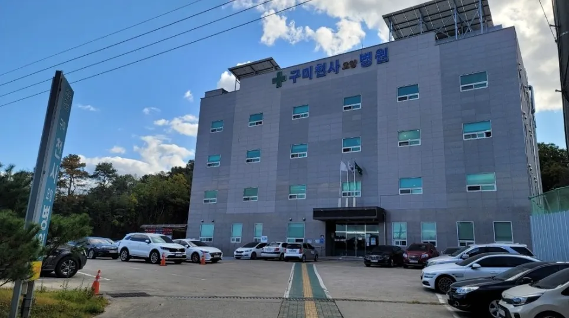
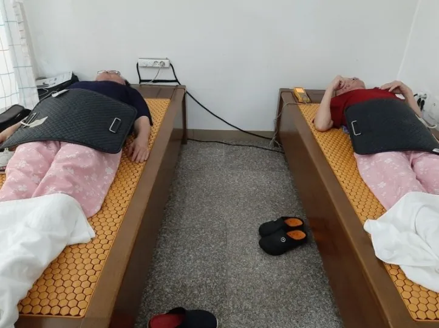
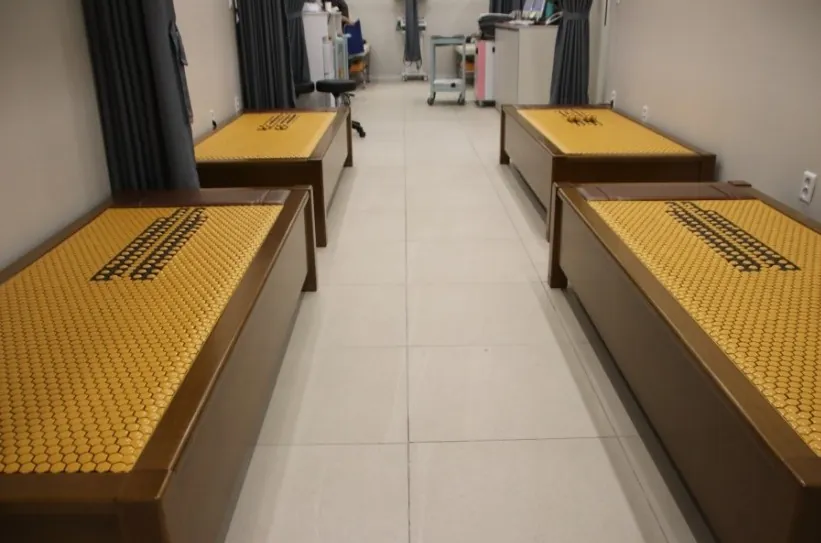
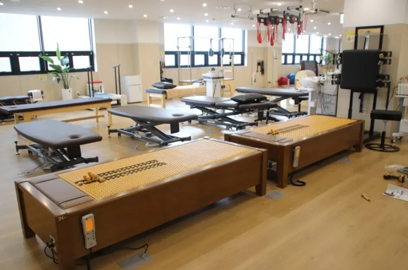
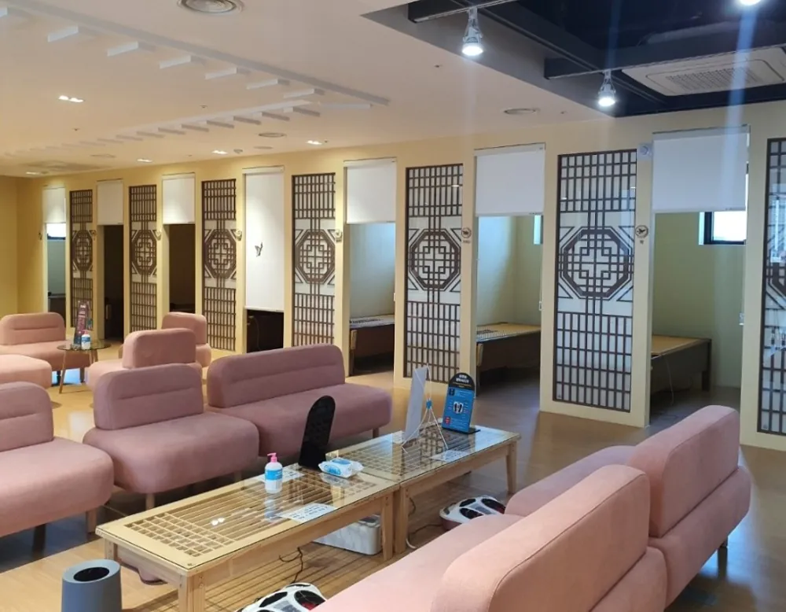
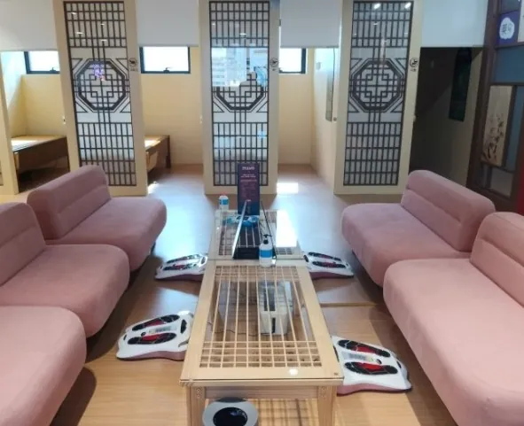
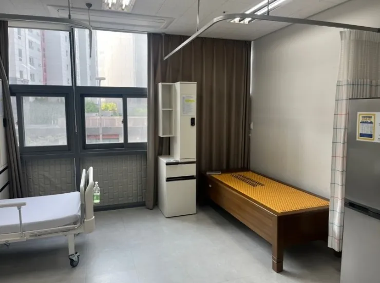

병원·재활병원용 의료기 침대,
3H 지압침대 HP
3H 지압침대 HP(3H-820HP)는 (주)쓰리에이치가 병원·요양시설용으로 만든 1인용 지압·온열 침대로, 개인용 온열기와 의료용 진동기를 결합한 식품의약품안전처 인증 조합 의료기기입니다. 2015년부터 전국 37개 의료기관에 80대가 설치되었습니다.

병원용 지압침대 HP는 어떤 제품인가요?
물리치료실·한방치료실·요양병원 병실에서 쓰도록 만든 3H의 기관 전용 모델입니다.
| 제품명 | 3H 지압침대 HP |
|---|---|
| 모델 | 3H-820HP |
| 구분 | 1인용 · 원목 프레임 · 병원·시설 전용 |
| 인증 | 식품의약품안전처 의료기기 (개인용 온열기 + 의료용 진동기 조합 의료기기) |
| 주요 기능 | 지압 돌기 수직 지압, 원적외선 온열, 리모컨 자동·수동 모드 |
| 가격 | 6,450,000원 (본사 공시가, 다량 도입 시 별도 견적) |
| 제조 | (주)쓰리에이치 (대구) |
- 병원·요양시설 설치 실적전국 37개 의료기관에 80대 설치. 한의원 15곳, 한방병원 6곳, 요양병원 3곳 등.
- 의료기기 인증조합 의료기기로 인증받아 의료기관 치료실에서 사용할 수 있습니다.
- 여러 대 일괄 도입주간보호센터·한방의료 체험시설에 10대씩 일괄 설치한 사례가 있습니다.
- 세금계산서·방문 설치법인·개인사업자 전자세금계산서 발행, 경북 전 지역 방문 설치와 사용 교육.
대구·경북 병원 설치 사례
재활치료실, 요양병원 병실, 한방의료 체험시설에 실제 설치된 모습입니다.


구미천사요양병원
경북 구미 · 요양병원 · 3H-820HP 2대 · 2022년 7월


고려H한방병원
대구 수성 · 한방병원 재활치료실 · 3H-820HP 4대 · 2023년 7월


대구한방의료체험타운
대구 중구 · 공공 한방의료 체험시설 · 3H-820HP 10대 · 2020년 2월

OK한방병원
세종 · 한방병원 · 3H-820HP 2대 · 2023년
전국 의료기관 설치 현황 (37곳 · 80대)
(주)쓰리에이치 본사 설치현황 자료 기준, 최근 설치순입니다.
| 기관명 | 유형 | 설치 제품 | 대수 | 시기 | 지역 |
|---|---|---|---|---|---|
| OK한방병원 | 한방병원 | 3H-820HP | 2대 | 2023 | 세종 |
| 고려H한방병원 | 한방병원 | 3H-820HP | 4대 | 2023.07 | 대구 수성 |
| 구미천사요양병원 | 요양병원 | 3H-820HP | 2대 | 2022.07 | 경북 구미 |
| 인앤아웃병원 | 병원·기관 | 3H-820HP | 2대 | 2022.04 | 부산 부산진 |
| 초이스한의원 | 한의원 | 3H-820HP | 1대 | 2022.01 | 부산 연제 |
| 대운산휴암병원 | 병원·기관 | 3H-820HP | 1대 | 2021.11 | 경남 양산 |
| 광동한의원 | 한의원 | 3H-920C | 1대 | 2021.08 | 부산 동래 |
| 전대성한의원 | 한의원 | 3H-820HP | 4대 | 2021.06 | 부산 부산진 |
| 태봉한의원 | 한의원 | 3H-820HP | 1대 | 2021.05 | 강원 철원 |
| 시선한의원 | 한의원 | 3H-820HP | 2대 | 2021.01 | 부산 동래 |
| 앤유의원 | 의원 | 3H-920C | 1대 | 2020.11 | 대구 북구 |
| 상지대학교 부속한방병원 | 한방병원 | 3H-820HP | 1대 | 2020.09 | 강원 원주 |
| 생생한의원 | 한의원 | 3H-820HP | 3대 | 2020.09 | 제주 서귀포 |
| 이순자소아청소년과의원 | 의원 | 3H-820HP | 1대 | 2020.09 | 대구 북구 |
| 대구한방의료체험타운 | 병원·기관 | 3H-820HP | 10대 | 2020.02 | 대구 중구 |
| 더이로운병원 주간보호센터 | 병원·기관 | 3H-820HP | 10대 | 2020.01 | 경남 양산 |
| 위담한의원 | 한의원 | 3H-820HP | 6대 | 2019.12 | 대구 중구 |
| 동아한방병원 | 한방병원 | 3H-820HP | 1대 | 2019.12 | 광주 남구 |
| 섬김한의원 | 한의원 | 3H-820HP | 1대 | 2019.08 | 광주 광산 |
| 배한의원 | 한의원 | 3H-820HP | 1대 | 2019.06 | 대구 북구 |
| 도인한의원 | 한의원 | 3H-820WD | 1대 | 2019.05 | 울산 남구 |
| 양산한의원 | 한의원 | 3H-820HP | 1대 | 2018.09 | 경남 양산 |
| 신태인한방병원 | 한방병원 | 3H-820HP | 4대 | 2018.05 | 전북 정읍 |
| 대한한의원 | 한의원 | 3H-820HP | 3대 | 2018.05 | 서울 광진 |
| 바로본의원 | 의원 | 3H-820HP | 1대 | 2018.05 | 경기 남양주 |
| 월배두한의원 | 한의원 | 3H-820HP | 2대 | 2018.02 | 대구 달서 |
| 김종호한의원 | 한의원 | 3H-820HP | 1대 | 2017.10 | 대구 수성 |
| 진주노인요양병원 | 요양병원 | 3H-820HP | 1대 | 2017.10 | 경남 진주 |
| 더서울병원 | 병원·기관 | 3H-820HP | 1대 | 2017.07 | 서울 성북 |
| 양산연합의원 | 의원 | 3H-820HP | 2대 | 2016.07 | 광주 북구 |
| 자연보감한의원 | 한의원 | 3H-820HP | 1대 | 2016.02 | - |
| 월손기념병원 | 병원·기관 | 3H-820HP | 1대 | 2015.12 | 경기 안양 |
| 구로경인한방병원 | 한방병원 | 3H-820HP | 1대 | 2015.12 | 서울 구로 |
| 우리신경외과 | 의원 | 3H-820HP | 1대 | 2015.11 | 경기 광명 |
| 오케이병원 | 병원·기관 | 3H-820HP | 1대 | 2015.09 | 인천 계양 |
| 무등산생태요양병원 | 요양병원 | 3H-820HP | 1대 | 2015.06 | 전남 담양 |
| 마디메디의원 | 의원 | 3H-820HP | 2대 | 2015.06 | 경기 일산 |
병원·기관 도입 절차
문의부터 설치·사후 관리까지 안동구시장센터가 직접 진행합니다.
- 상담·현장 확인병실·치료실 공간과 필요 대수 확인
- 시연·체험기관 내 시연 또는 안동 센터 체험
- 견적·계약대수별 견적, 전자세금계산서 발행
- 배송·설치현장 설치와 사용 교육
- 사후 관리(주)쓰리에이치 공식 A/S
자주 묻는 질문
병원·요양시설 담당자분들이 자주 묻는 내용입니다.
병원용 지압침대로 어떤 제품을 쓰나요?
병원·요양시설에는 (주)쓰리에이치의 기관 전용 모델인 3H 지압침대 HP(3H-820HP)를 주로 도입합니다. 1인용 원목 프레임 구조이며, 개인용 온열기와 의료용 진동기 기능을 결합한 조합 의료기기로 식품의약품안전처 인증을 받았습니다. 본사 설치현황 기준 전국 37개 의료기관 설치 제품 대부분이 이 모델입니다.
재활병원·요양병원에서도 사용할 수 있나요?
사용할 수 있습니다. 경북 구미천사요양병원(2대), 대구 고려H한방병원 재활치료실(4대), 경남 양산 더이로운병원 주간보호센터(10대) 등 요양·재활 현장에 설치된 사례가 있습니다. 전국 37개 기관 중 요양병원은 3곳, 한방병원은 6곳입니다.
3H 지압침대 HP 가격은 얼마인가요?
본사 공시가 기준 1대 6,450,000원입니다. 여러 대를 함께 도입하는 병원·기관은 대수와 설치 조건에 따라 별도 견적을 드리며, 법인·개인사업자 모두 전자세금계산서를 발행합니다.
의료기기 인증 제품인가요?
네. 3H 지압침대 HP는 개인용 온열기와 의료용 진동기를 결합한 조합 의료기기로 식품의약품안전처 의료기기 인증을 받았습니다. 본사 상세자료에 허가증과 시험성적서가 함께 안내되어 있습니다.
병원 내부 보고용 자료를 받을 수 있나요?
받으실 수 있습니다. 전국 37개 의료기관·80대 설치 목록, 대구·경북 현장 사진, HP 사양과 도입 절차를 정리한 보고용 PDF를 이 페이지에서 바로 내려받으실 수 있습니다.
경북 외 지역 병원도 납품이 되나요?
됩니다. 안동구시장센터는 경상북도 전 지역(안동·영주·예천·의성·봉화·문경·상주·구미 등)을 방문 상담·설치하며, 그 밖의 지역도 (주)쓰리에이치 공식 유통망을 통해 전국 납품이 가능합니다.
최종 수정일 2026-09-30 · 가격은 (주)쓰리에이치 본사 공시가 기준입니다.